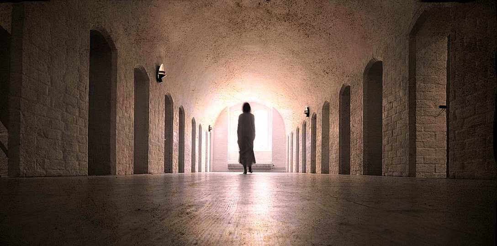
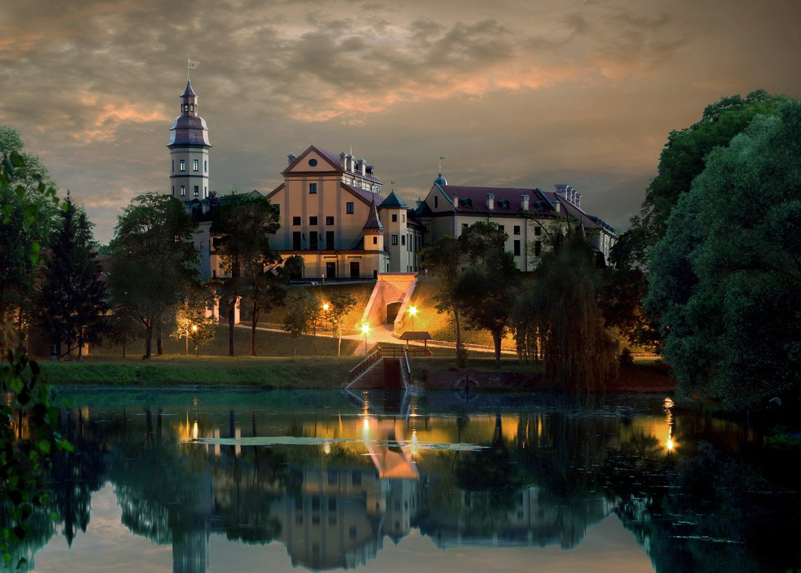

ПРИЗРАКИ
«Черная панна».
Призрак Несвижского замка
Версия первая
Легенде о «Черной панне» Несвижа или Чёрной Даме Несвижского замка уже больше 400 лет. Возникла она на реальных исторических событиях, в центре которых были страстные романтические отношения коронованных особ, которые, как известно, не могут жениться по любви.
Во времена Николая Радзивилла по прозвищу Чёрный, род Радзивиллов был очень могущественен, но Николаю было мало титула князя и захотел он стать королём ВКЛ. Решив породниться с будущим польским королём Сигизмундом Августом через свою двоюродную сестру Барбару Радзивилл (1520-1551), которая жила по соседству с Сигизмундом в Вильно. Красавица Барбара и Август полюбили друг дружку и стали тайно встречаться.
Прознав про это Несвижский Радзивилл - Николай Чёрный, заботясь о репутации рода, потребовал от будущего короля или женитьбы, или расстаться с любимой. Сигизмунд обещал оставить Барбару, но после того как Радзивилл сделал вид, что уезжает, поспешил к любимой проститься, где и был застукан Радзивиллом Чёрным. Нарушивший обещание Август согласился на тайную свадьбу с Барбарой. Но мать будущего короля Бона Сфорца ненавидела Радзивиллов и искала сыну более выгодную партию в королевских дворах Европы.
После смерти старого короля тайна вышла наружу. Через 17 дней после смерти отца, Август уже руководил заседанием литовского Сейма, где и объявил о своей женитьбе и получил согласие на признание Бабрары королевой. Однако Сейм Речи Посполитой прошел менее гладко. Самые влиятельные магнаты категорически отказывались признавать этот брак. Считалось, что он позорит королевский титул. Однако Август, ранее мягкий и уступчивый, твердо стоял на своем: «Что сделано - то сделано, и никто не вправе требовать от меня изменить клятве, данной мною своей супруге, но, наоборот, вы должны были удерживать меня от нарушения клятвы, данной перед Богом. Я дал своё слово чести быть справедливым к жене, и я не могу его нарушить перед лицом Всевышнего, который видит все мои поступки. Слово чести и клятва перед Богом для меня дороже всех царств мира». Мать сделала всё для расторжения брака, плела искусные интриги, настраивала шляхту. Спор о коронации Барбары шел на протяжении двух лет. Но все же, упорство Авгутса принесло свои плоды, сопротивление шляхты постепенно ослабело, и в декабре 1550 года Барбара надела Польскую корону.

В знак протеста Бона Сфорца (sforzzare (итал.) – принуждать, навязывать свою волю) вернулась в Италию. Мать короля принадлежала к древнему роду Медичи, которые имели обширные познания в ядах. Она отдала приказ своему аптекарю устранить Барбару. Аптекарь Монти успешно выполнил указание, подсунув яд вместо лекарства. Через шесть месяцев после коронации Барбара умерла от страшной болезни. Умирала она в тяжких муках. вся покрытая язвами, источающими зловонный запах, который сложно было выносить.Однако, несмотря на все это, король оставался с любимой женой до последнего вздоха, ухаживал и поддерживал в ней жизнь.
По традиции, польских королей хоронили в Кракове. Но Август настоял на том, чтобы перевезти тело Барбары на родину - в Вильно: «Не приняли ее тут при жизни, не оставлю ее здесь и после смерти». Весь путь от Кракова до Вильно он прошел пешком, следуя за черной каретой. Похоронили Барбару в Кафедральном соборе в Вильно, её саркофаг и сейчас находится там.
После смерти Барбары король очень сильно тосковал. Он часто наведывался в Несвижский замок к братьям своей возлюбленной. Здесь все напоминало о любимой Басеньке. В один из таких визитов,отчаянно тосковавший король с помощью чёрной магии и алхимиков Твардовского и Мнишека решил вызвать дух Барабары. У ритуала было лишь одно условие - не прикасаться к призраку. Когда появилась видение Барбары, король не смог сдержать своих чувств и бросился к призраку, чтобы обнять, разрушив этим магические чары. В тот же момент в комнате что-то взорвалось, пошел трупный запах… Так душа несчастной женщины не смогла вернуться в свой мир, и вынуждена была скитаться по Несвижскому замку.
По одной из версий, она смогла бы приобрести покой, если бы любимый после смерти оказался рядом с ней. Август пообещал любимой, что почувствовав близкую кончину, приедет умирать именно сюда, в Несвижский замок. Однако и на этот раз судьба оказалась слишком жестокой ко влюбленным. Смерть пришла к королю слишком быстро, и он так и не смог выполнить свое обещание. Так и остался призрак на этой земле и вынужден вечно бродить среди живых. Чёрной Панной ее прозвали потому, что ходит призрак в черных траурных одеждах, в знак своей несчастной любви. Как правило, дух Барбары появляется в Несвижском дворце ночью, в первом часу. По преданию, своим появлением душа Барабары предупреждает о грядущих бедах. Ее видели во Дворце как раз накануне сильного пожара в 2002 году, когда сгорела большая часть дворца. Во времена Великой Отечественной в легенду о призраке Чёрной Дамы верили немцы и побаивались её. Завидев где нибудь неясные тени или очертания они неистово обстреливали это место и быстренько прятались.
Версия вторая
Существует еще одна версия смерти молодой королевы. Барбара до встречи с Сигизмундом была замужем за Станиславом Гаштольдом. Правда, недолго. Через три года после свадьбы она стала вдовой. И болтали злые языки, что была Барбара в своем вдовстве необычайно любвеобильна. Будто бы только за 10 месяцев вдовства она сменила 38 любовников, причем, не обращая ни малейшего внимания на их социальный статус, а ориентируясь лишь на «интимные достоинства». Болтали, что вдова совращала конюхов, крепостных и даже монахов. Радзивиллы же, мечтающие о короне, попросту свели очаровательную Барбару с Сигизмундом. Поймав же любовников в весьма недвусмысленном положении, тут же заставили Сигизмунда жениться – ксендз ждал за дверью спальни. «Дабы смыть пятно с чести сестры нашей и с чести нашего рода…», – пояснили строгие братья.
Польше этот брак ничего не давал. Все «бонусы» отходили только Радзивиллам. В том числе и земли, на которые уже наложила свою нелегкую ручку Бона Сфорца – старая королева отчего-то предпочитала белорусские, а не польские земли, чем откровенно стояла поперек горла Радзивиллам. Но сейм смирился. Бона Сфорца поскандалила, но что ж делать… Вот только старые грехи отбрасывают длинные тени. И любвеобильность прекрасной Барбары принесла свои плоды в виде венерического заболевания. От которого она и умерла. Король же, не желая верить всему, что говорили о его любимой жене, обвинил в ее смерти мать.
Версия третья
По еще одной версии причиной смерти Барбары явилось отсутствие наследника – что для королевской четы смерти подобно, а для королевы означает либо монастырь, либо могилу. Будто бы Барбара заболела из-за лекарств от бесплодия, которые и свели ее в конце концов в могилу.
Но что интересно – даже самая неромантическая, «венерическая» версия смерти Барбары не отрицает того, что обожавший ее король вызывал дух. И что дух этот все еще ожидает своего возлюбленного в старом Несвижском замке. Некоторые экскурсанты утверждают, что своими глазами наблюдали, как Черная Дама проплывает по замковым коридорам. И вы вполне можете попробовать встретиться с призрачной красавицей.
